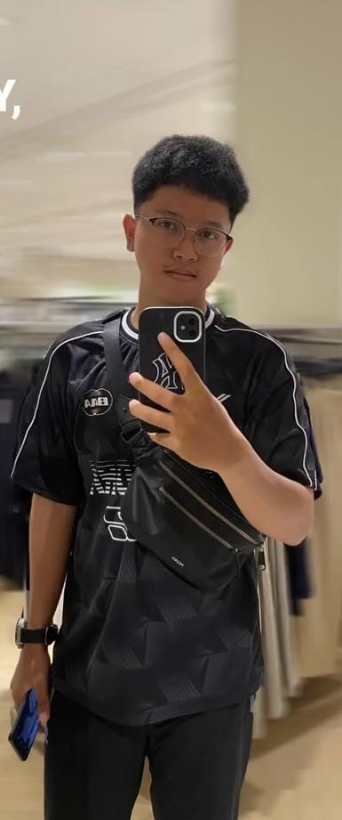
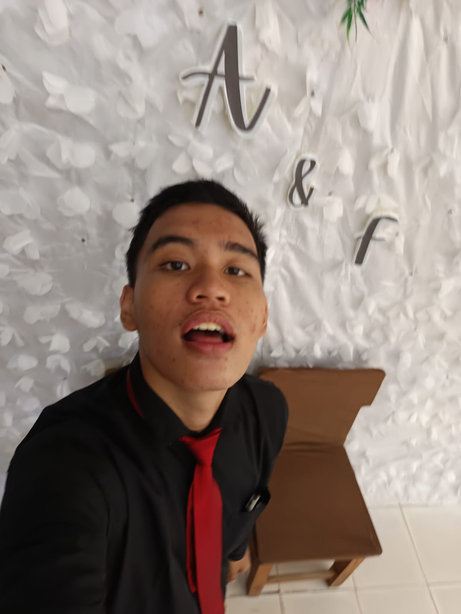
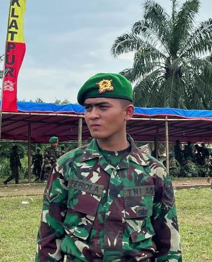
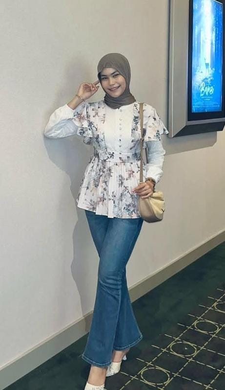

SMA Negeri 14 Palembang Akreditasi A
Diterima di Politeknik Sriwijaya

Diterima di Universitas Sriwijaya
Diterima di Universitas Sriwijaya

Diterima di Politeknik Sriwijaya

Diterima di Tentara Negara Indonesia

Diterima di Politeknik Kesehatan